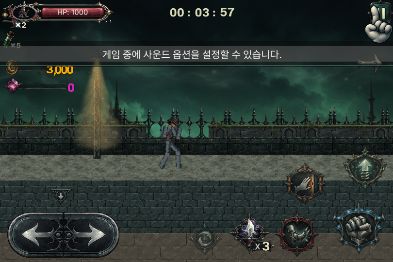
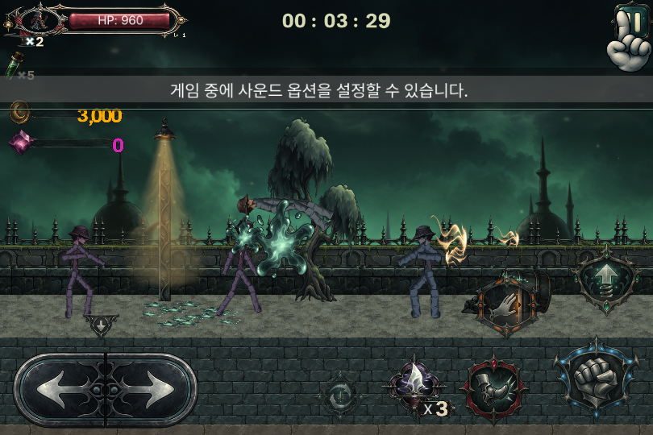
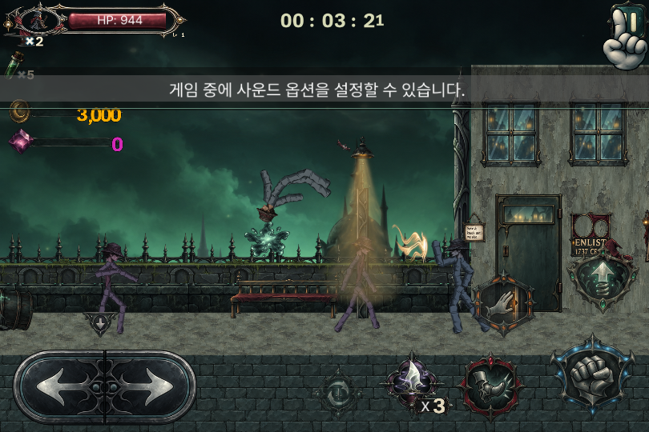
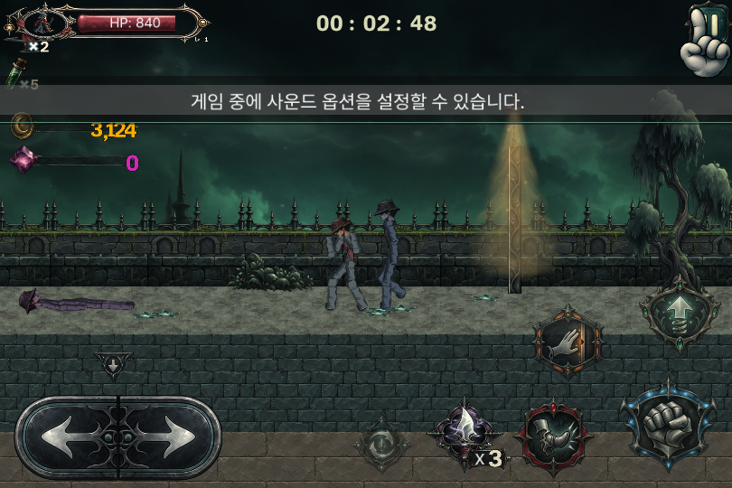
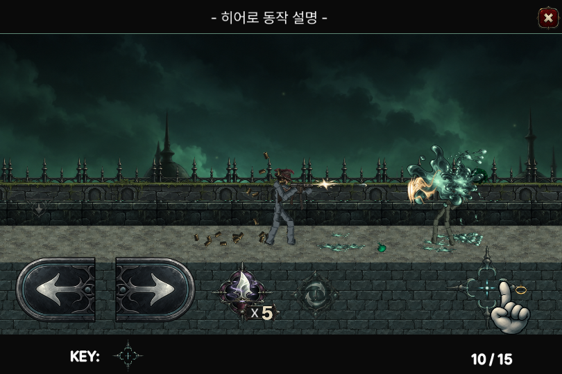
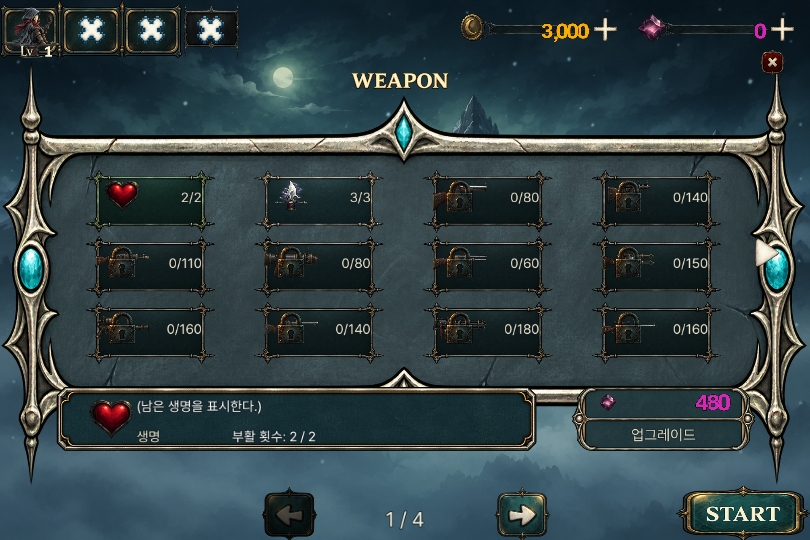
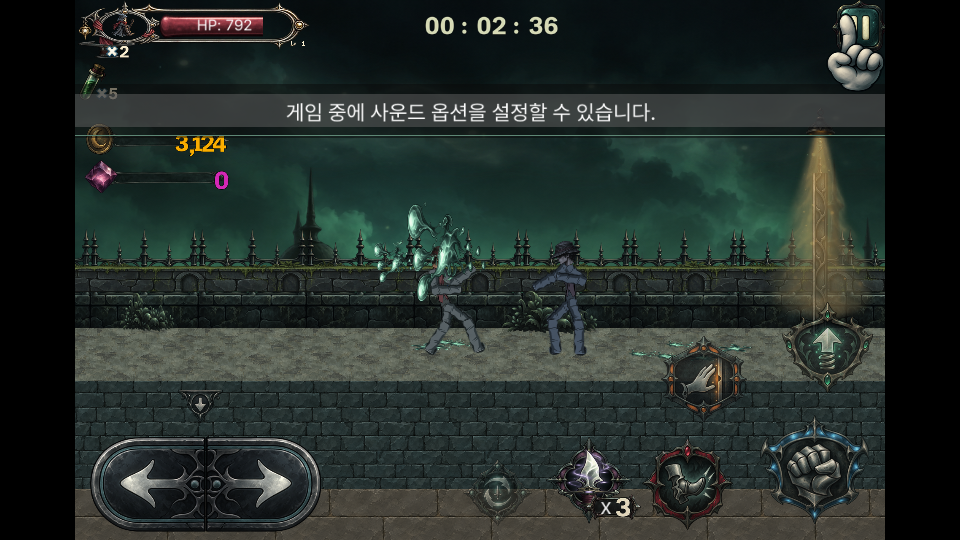
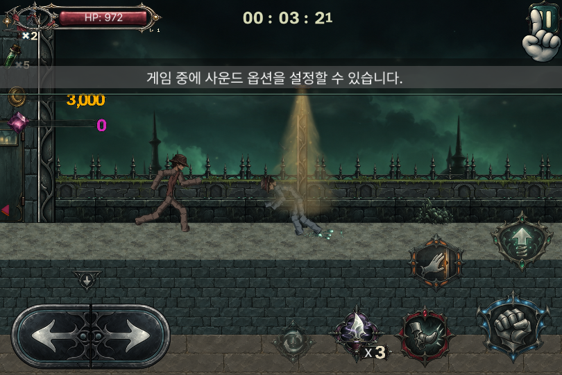
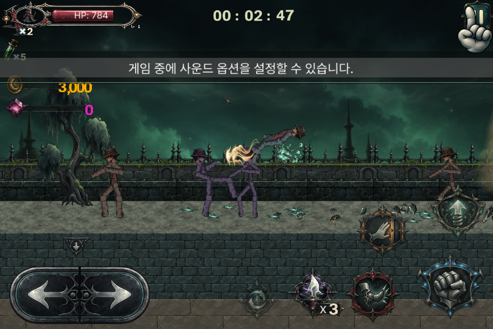
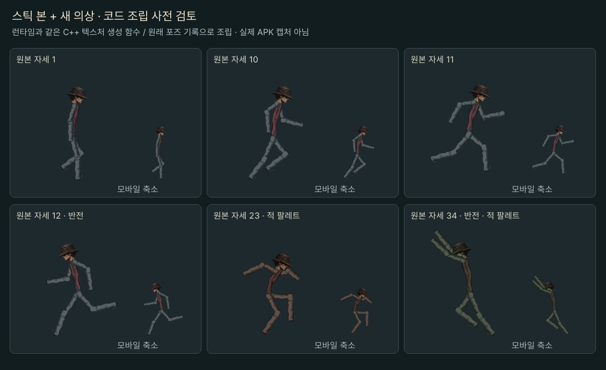

현재 검수 빌드: 1.0.5 / R14
반복되는 금속 패널과 원통형 반사광을 제거했습니다. 새 원화를 무광 옷감과 큰 명암 면으로 다시 그리고, 부품 중앙의 과도한 폭 증가도 줄였습니다. 원래 골격·동작·모자를 유지하며 망토는 없습니다.

MuMu Android 15, x86_64에서 ARM64 APK 번역 실행. 가로 960×540 / 게임 영역 810×540. 실물 휴대전화 성능 검사와 구분합니다.









위 조립 표는 정적 C++ 생성 결과이며 실행 캡처와 구분합니다.